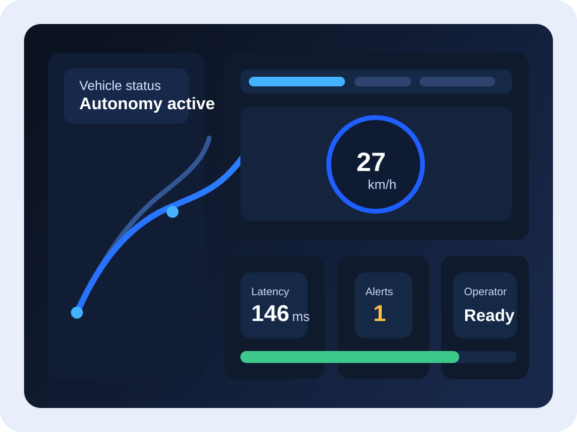

Primary beachhead
UK university campuses
Static website conversion of the uploaded Word document
Remote monitoring for controlled autonomous mobility
This site turns the uploaded business-model document into a structured, multi-page web presence. It presents the market gap, product definition, customer segmentation, financial case, and risk position for a hybrid system that combines autonomous vehicle operation with real-time remote supervision and selective intervention.
UK university campuses
364 sites
7 sites
£325,000

The proposed product occupies the space between high-cost full-autonomy stacks and teleoperation-heavy systems. It is positioned as a lower-cost, hybrid supervision platform for controlled environments such as campuses, airports, shuttle corridors, and selected closed sites. In normal operation, the vehicle follows a predefined trajectory autonomously. A remote operator monitors the system through a human-machine interface and can intervene in abnormal or safety-critical situations.
The document argues that this positioning is commercially attractive because controlled environments are easier to pilot, procurement is more centralised, and safety oversight remains a practical requirement even when full-time remote driving is unnecessary. The commercial model is site-based rather than passenger-based, using a one-off deployment fee and a recurring annual support fee.
Competitive position
Advanced autonomy deployments are powerful but complex, capital intensive, and difficult to justify for small fleets in controlled routes.
Continuous human driving raises operating cost, bandwidth dependence, and integration complexity when full-time remote steering is not needed.
A lightweight supervision layer with emergency intervention gives safety cover, keeps the autonomy stack leaner, and remains practical for campus-scale operations.
Teleoperation providers such as Phantom Auto, Ottopia and Vay offer strong remote-control capability but are characterised in the document as high-cost and operationally heavy. Ohmio and Oxa better match controlled environments but are described as comparatively weak in real-time intervention. Waymo demonstrates the outer edge of autonomy capability, yet the document treats it as commercially unsuitable for the target use case.
Value proposition
Lower infrastructure and operating burden than continuous teleoperation.
Emergency braking and selective override support abnormal-event management.
No requirement for full-time remote driving in day-to-day operation.
Designed for campuses, shuttles, research sites and low-speed routes.
Balances autonomous control, remote monitoring, and human intervention.
Page map
Competitive landscape, target segments, TAM/SAM/SOM logic, revenue assumptions, and supporting data sources.
System overview, architecture, features, workflow, team structure, development schedule, and cost model.
Business model canvas, structured risk analysis, SWOT summary, and final strategic conclusion.
The Word document references enrolment and salary charts, but the accessible export did not include usable source images. Replace this block with the original figure exports if they are available later.